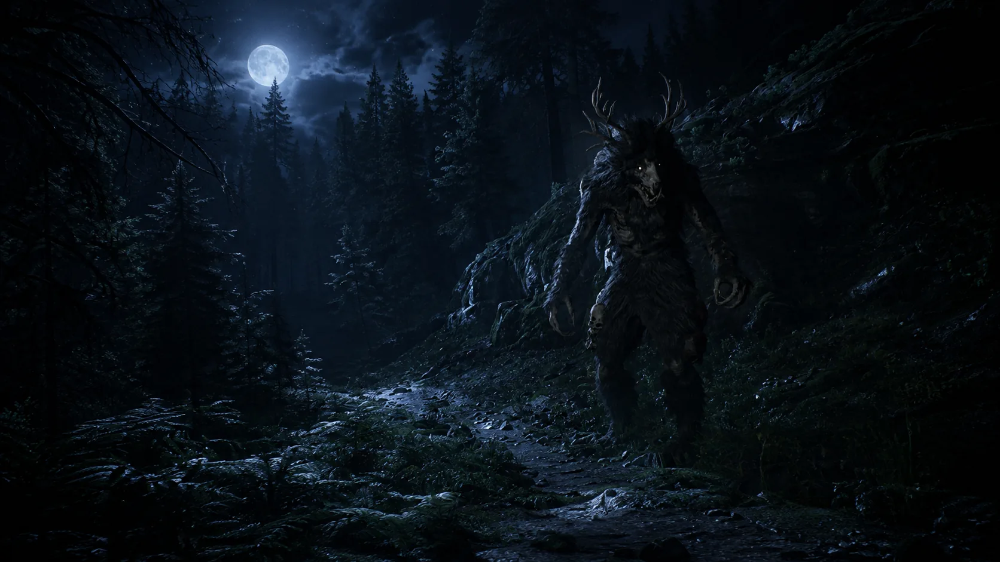
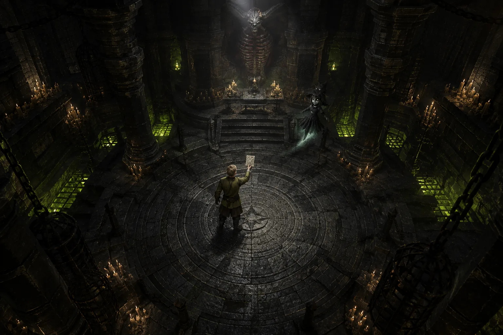

A DARK FANTASY ACTION RPG
The realm
remembers.
Enter a dark fantasy action RPG where dangerous magic, uneasy alliances and your choices shape the journey.
A SECOND CHANCE IN AN UNFORGIVING WORLD
You should
have died.
You survived what should have killed you. Beneath an old house, a mysterious Doll offers a way forward. Beyond its walls, villages cling to faith, a kingdom holds its breath, and something waits in the dark.
Fight for your survival. Learn whose help to accept. Decide what kind of person emerges from the dark.
Create your characterA REALM WORTH GETTING LOST IN
Follow the road.
Question the welcome.


World illustrations are concept art.
EVERY FIGHT ASKS SOMETHING OF YOU
Steel.
Magic.
Nerve.
Read an enemy’s attack. Commit to your own. Discover weapons and techniques that reward the way you want to fight.
Find your weaponTHREE SCHOOLS. THREE KINDS OF POWER.
Magic you can
hold in your hands.
A Relief is a physical object you deploy in the world. Step into its influence to cast. Where you place it matters.
 Relief artwork
Relief artworkHoly MAGIC
Restore. Protect. Bind.
Heal wounds, strengthen your defenses and hold enemies in place. Protect yourself—or support the people fighting beside you.
Explore Holy magic
Concept artWHAT YOU DO. WHAT YOU STAND FOR.
Some choices
stay with you.
People remember the help you offered, the harm you caused and the side you took. Your relationships shape who will stand beside you.
A brave answer cannot save everyone. It can still say something about you.
Meet the people of the realmWhat is Eclipsed Realms?
A dark fantasy action RPG about exploration, physical combat, powerful magic and personal choices. Travel through troubled communities, build relationships and decide where you stand.
When can I play?
Eclipsed Realms is in development. Release timing, supported platforms and where to buy the game have not been announced.
Can I play with friends?
The campaign supports up to four players, with up to two local players on each machine. Join over a local network or with a direct address.
Do we have to make the same choices?
No. Your answers, relationships and personal consequences belong to your character. The host’s choices determine what physically happens in the shared world.
YOUR NEXT STEP